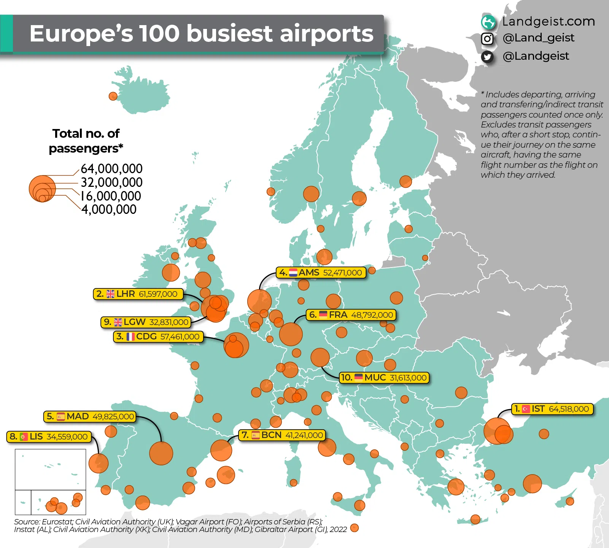
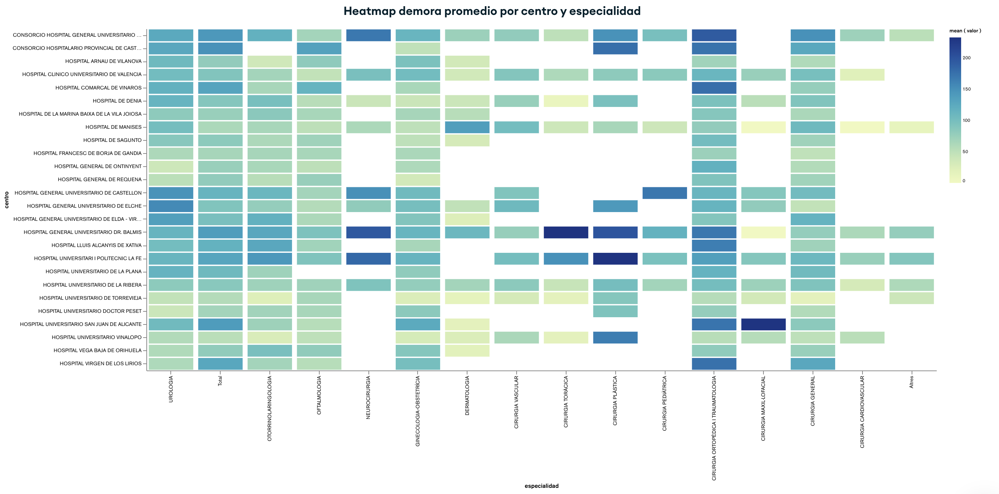
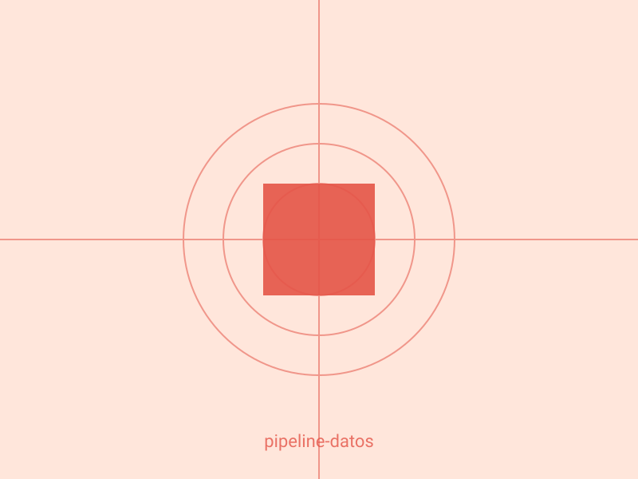
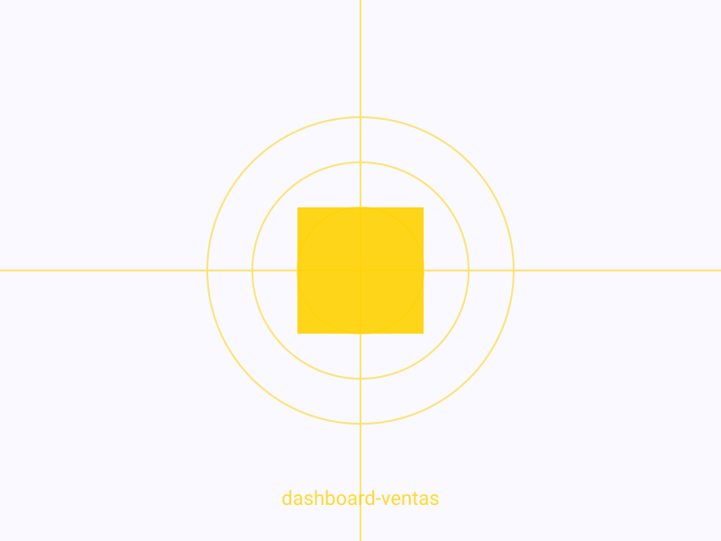
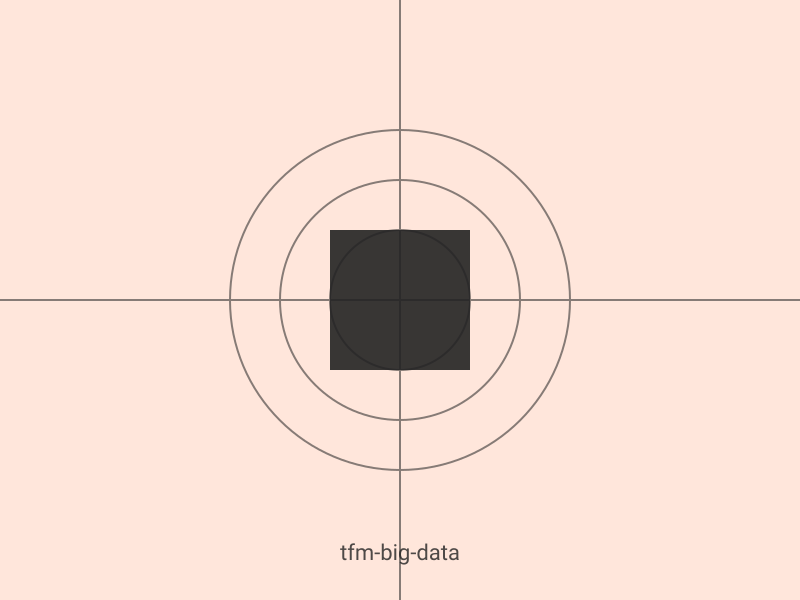
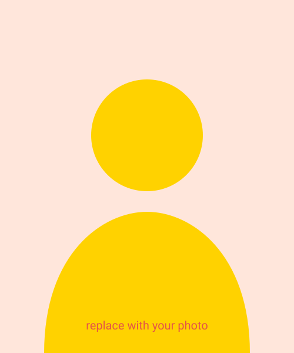

I'm a computer engineer who found his way into data and stayed there. Curiosity is what got me here, and it's what keeps me picking up something new with every project. What follows is what I've built along the way, and the thinking behind each piece.

Using EUROCONTROL data to classify European airports by their traffic patterns and usage profile.

Normalizing surgical waiting data with MongoDB and API automation to reveal healthcare system bottlenecks.

Short description of the project: the problem it solved and what you built.

Short description of the project: the problem it solved and what you built.

Short description of the project: the problem it solved and what you built.

I studied Computer Engineering and I'm finishing an MSc in Big Data and Data Science at VIU. In between I worked as a data analyst at Deloitte Spain, mostly in Python and SQL, and ran a freelance project building AI-driven customer service systems for small businesses. Before that came internships in frontend development and hardware, which is where I figured out what I wanted to do.
I've moved around a fair amount: León, Salamanca and Madrid, an exchange year in Mexico, some summers in Dublin and now Switzerland. Every move meant starting over with a new city and new people, and this one added a new language on top. I'm learning German from scratch, which is humbling in a way that code rarely is.
Away from a screen I run and train outdoors. I follow aviation, geography and geopolitics closely, and I keep an eye on the markets. I also love to travel and I document what I see, it sharpens observation skills that transfer directly into data work. The common thread, if there is one, is that I'd rather understand how something works than just use it.